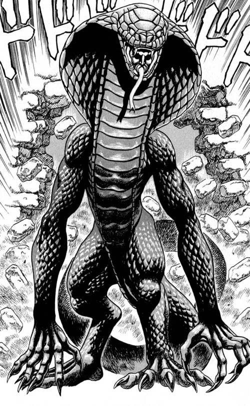
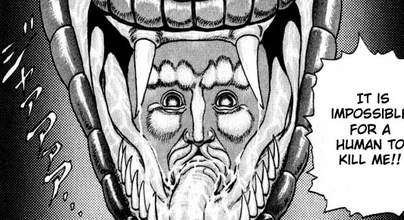
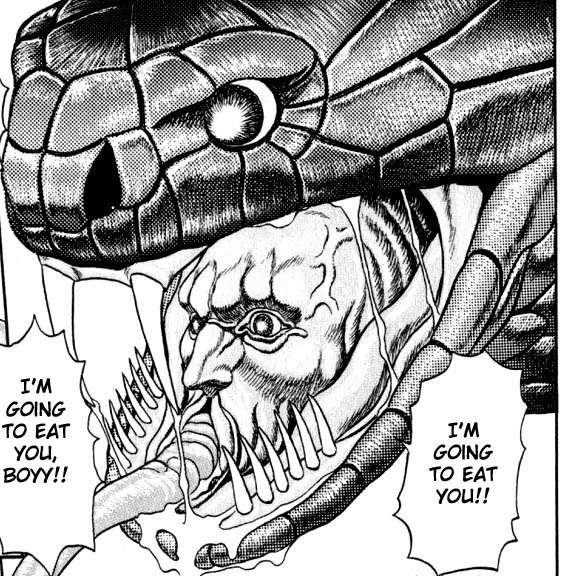
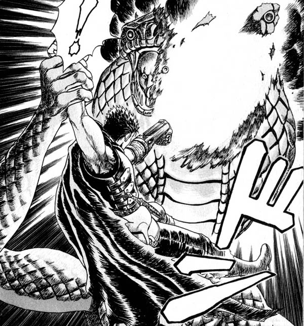
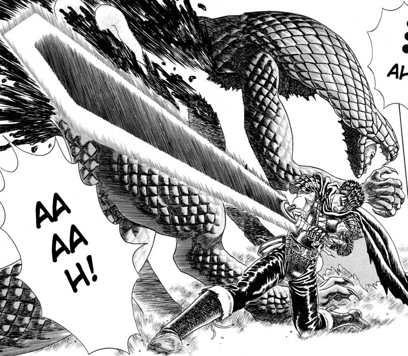
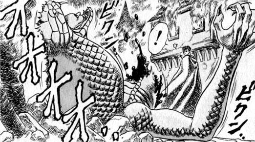
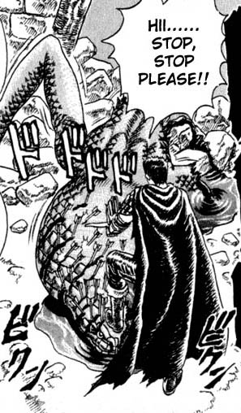
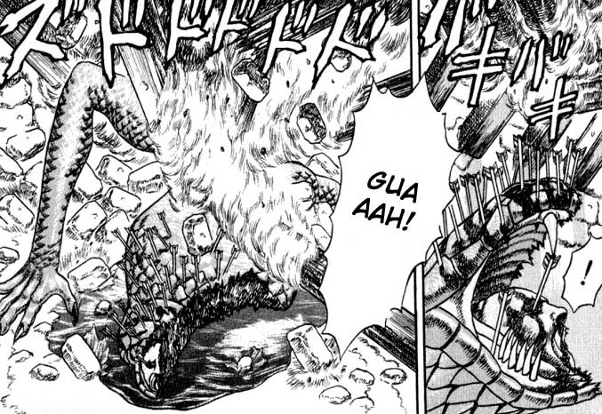
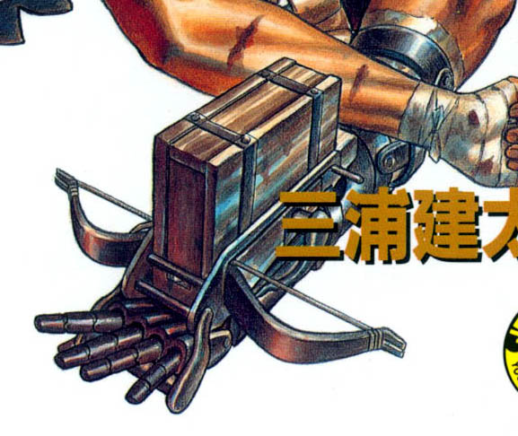

Hi John.
Okay, first off, a short description of the scene:
- Guts uses his arm cannon and shoots off a huge chunk of flesh from the Snake
Baron's left shoulder and the left side of his "human" face (including his left
eye)
- Guts slices off the Snake Baron's left arm at the bicep
- Guts slices the Snake Baron into half, at the chest
- The Snake Baron falls onto his back against stone/brick rubble, exposing his
"human" face, and belly to Guts
- Guts shoots many arrows into the Snake Baron's face/head, and also one notably
in the Snake Baron's remaining "human" eye (his right eye)
One thing to note, is that in the manga, you can see that when the Snake Baron is laying down in front of Guts, he's actually on his front site, with his belly on the ground. I think we should change it, and make it so the Snake Baron is lying on his back side, so his face and belly are facing upwards, towards Guts. The reason for this change is so we can more easily see the Snake Baron's face.
Colors of Snake Baron:
- Paint him like you would a real snake. His general color should be
brownish/greenish, but I'm sure you can add lots of subtle colors to his scales
like you did with that Raptor kit or that Flying Dragon kit on your website.
- His human face should be pinkish/red-ish. Slimy and fleshy, like the
inside of human flesh.
Base:
- Mostly dirt/earth, with stone & brick rubble beneath the Snake Baron
- Burning wood falls on top of the Snake Baron at the end, so maybe some burnt
wood would look good scattered around the base, or even on top of the Snake
Baron's body.
Guts:
- It's not necessary, but if you could sculpt a crossbow, or maybe just some
sort of wooden container that can resemble it, and attach it to Guts mechanical
arm, that would be awesome.
Pictures:
| Full Size Shot |  |
| Face (front) |  |
| Face (side) |  |
| Wound 1 (cannon) |  |
| Wound 2 (sword) |  |
| On Back, Belly Up |  |
| Rubble |  |
| More Rubble with Burning Wood |
 |
| Crossbow |  |